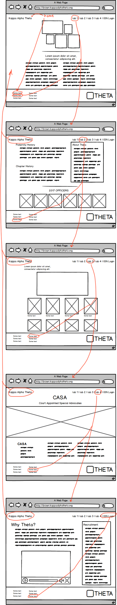

Brown Kappa Alpha Theta
Kappa Alpha Theta has been at Brown University since 1897. I’ve had the fortune of being a member of Kappa Alpha Theta for the past two years. As recruitment season is approaching, it is important that we maintain and present our image to the potential new members.
The Problem:
The user is overwhelmed with a slew of information that is not organized very well, deviating from its purpose to inform students and adults about what Theta life at Brown is like. The information available on the page was also not organized in an intuitive way where the user could easily find information.
The goal:
Create a simple and minimalistic website that highlights the photos of Brown Theta’s experiences while also organizing the information in an easier way.
Inspiration:
I went through the website as a current member and recognized all the unnecessary pages that were available to browse through. Kappa Alpha Theta’s national headquarters offers a template website for all their chapters to use. I decided to revamp the website to reflect current trends in social media and to simplify it. I also spoke with two other members who offered ideas in terms of simplifying the web page so that others could find and understand information better.
Ideation:
Once my research was completed, I wireframed a skeletal outline of the website I was intending to create with Balsamiq. I keep my initial inspiration of making the website as simple and organized as possible in mind

Six usability criteria kept in mind during the redesign:
- Intuitive design
- Error frequency and severity
- Ease of learning
- Memorability
- Efficiency of use
- Subjective satisfaction
Wizard of Oz:
After creating my wireframes, I simulated an interaction of my wireframes on two of my friends. This helped me understand how a user would navigate through the website. I asked some guiding questions by setting a scenario where the user had to find specific information. Some key points that popped up were:
- The About Us page had too many blocks of text that might overwhelm the user
- Condensing the blocks of texts by making an image hoverable and having a description pop up
- Making the website more interactive because it seemed too much like a read me website
- Everything in the website was “too central” the design did not go outside of the middle of the page
- Putting more visual images of girls being involved in the philanthropy page
Final Product:
Given the timeline of this project, I was not able to make multiple iterations of the website. Overall, I created a more simplistic website that was easier to navigate and find information. The simplistic nature of the website allowed the user to focus on the information and the photos on the website. This was my final product that I came up with.

Results:
After showing my website to a couple of other Thetas in my chapter, the high-fidelity mockup was well-received. They appreciated how simple it was and how it seemed to showcase a variety of Theta’s experiences while also condensing all the information on the page. Many of them agreed that implementing this website format would be a good step towards presenting their chapter image in a more put together way.